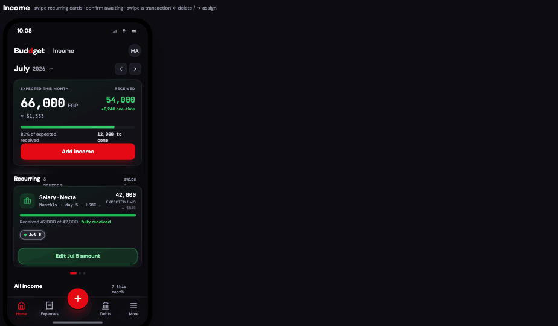
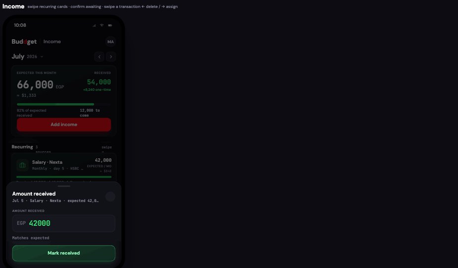
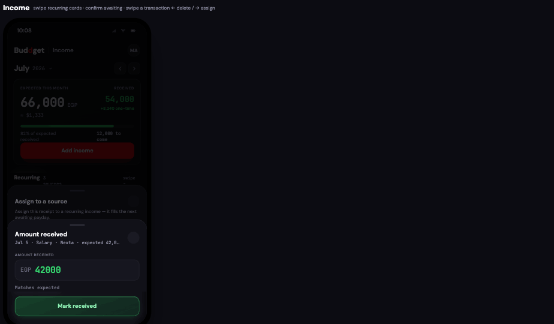
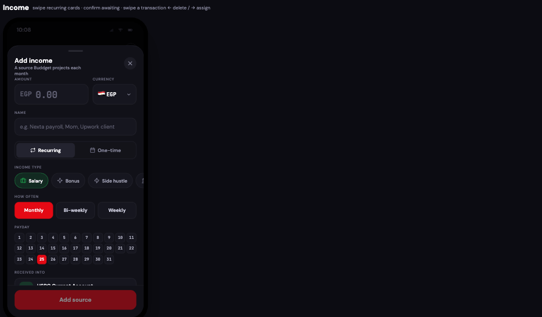
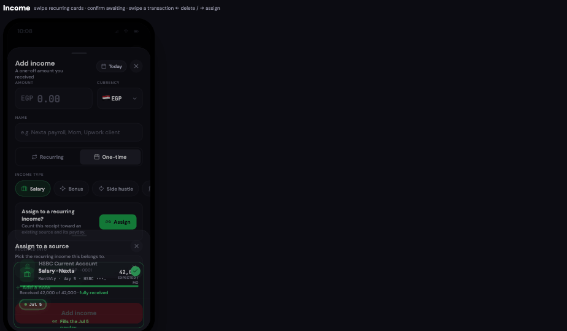
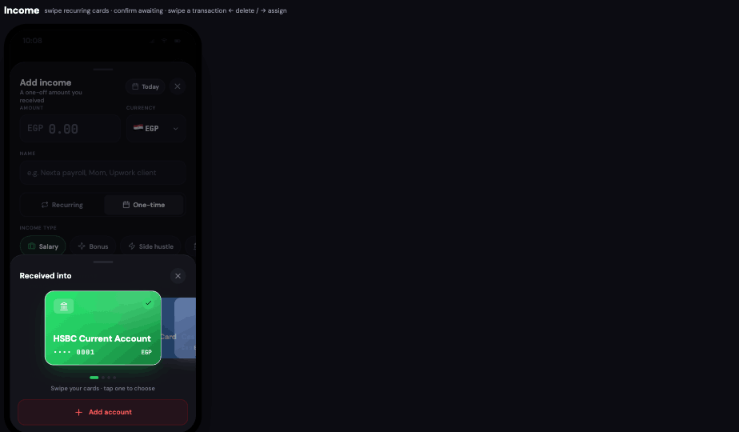
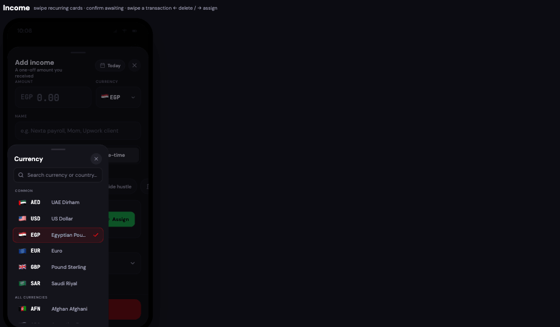

This is the complete, binding spec for the redesigned Income page and its Add-Income flow. Build it to 100% fidelity — zero deviation. Every visual, number, color, radius and interaction below is intentional. When something says reuse, do not rebuild it.
0 · Golden rules (read first)
DON'T
Never recreate or redesign the Payment Method selector. The "Received into" step uses the app's existing payment-method card carousel component. Import and mount it as-is. Do not restyle it, do not fork it.
DON'T
Never recreate the Calendar / date picker. The one-time "Received on" date uses the app's existing Unified Calendar popup. Reuse it verbatim.
DON'T
Never recreate the Currency selector. The currency field opens the app's existing Unified Currency Sheet. Reuse it verbatim.
DO
Reuse those three shared components exactly where the screenshots show them. This handoff only defines the Income-specific surfaces around them: the page, the recurring cards, the add/edit form, the assign sheet, and the amount sheet.
1 · Data model
Income is two parallel entities. Keep them distinct — projected vs actual must never be merged into one figure.
A · Income Source (a recurring template)
// one recurring stream the user declares
Source {
id, name, // e.g. "Salary · Nexta" (type is encoded in the name, not a badge)
type, // salary | bonus | side_hustle | debt | gift | refund | other// + system-only: savings | investment (read-only in editors)
color, icon, // per-type accent + Lucide glyph
frequency, // monthly | biweekly | weekly
dom, // anchor payday (day-of-month). biweekly/weekly derive the rest
paymentMethodId, // "received into" account — shown on the card
expected, // MONTHLY-EQUIVALENT expected amount (see §2)
occ: [ Occurrence ] // this month's paydays, computed on read
}
B · Occurrence / Income Event (an actual receipt)
Occurrence {
id, date, // "Jul 5"; becomes "Today" when confirmed off-schedule
status, // received | late | partial | missed | awaiting
amount // expected per-payday amount; overwritten with actual on partial
}
Status
Chip
Counts toward actual income?
Who sets it
received
Received
Yes — full amount
User
late
Late
Yes — full amount
Auto (arrived after payday) / user
partial
Partial
Yes — at the entered amount
User (via amount sheet)
missed
Missed
No — counts as nothing
User only
awaiting
Awaiting
No — pending, display-only
System (overdue never auto-flips to missed)
2 · Money math (do not change)
Monthly-equivalent for a source's expected: weekly → amount × 52/12; biweekly → amount × 26/12; monthly → amount × 1. Non-monthly sources display the per-paycheck figure in the cadence line and the monthly equivalent as the big number.
Per-source progress: realized = Σ occ.amount where status ∈ {received, late, partial}. Bar = min(100, realized/expected). Line = "Received {realized} of {expected} · {fully received | {expected−realized} to come}".
Summary — Expected = Σ source.expected (projected recurring only). Received = Σ realized recurring occ. +one-time = Σ standalone one-time receipts, shown separately, never folded into Expected.
The full Income page. Editorial month header (reused from Expenses), glass summary card, recurring carousel, all-income ledger.
Header: the exact editorial month control from the Expenses screen — July (700/21px sans) + 2026 (mono, muted) + chevron, and two square arrow buttons (prev/next). Reuse verbatim.
Summary card — glass gradient (see §8). Two columns, never merged: Expected this month (white, 34px mono) with ≈ $ under it; Received (green #35D46F, 22px mono) with +{oneTime} one-time under it. Green progress bar = % received, with {pct}% of expected received and {toCome} to come. Red solid Add income CTA.
Recurring — a one-card-per-swipe carousel (horizontal drag + red dots). Every card is a fixed 213px height regardless of monthly/biweekly/weekly. See §4.
All income — every income transaction (recurring receipts + one-time), grouped by day like Expenses, each with a Recurring or One-time badge. Rows are swipeable (§6).
4 · Recurring card & payday actions

Card contents are unified: header (icon · name · cadence · payment method · expected/mo · ≈$), progress bar + line, a single-line payday chip strip, then the action row.
The chip strip scrolls horizontally and stays one line for any payday count (weekly = 4 chips still fits) — this is what keeps every card the same height. Received chip = filled colored dot; awaiting = hollow dot.
No 3-button row. When no payday is selected the action row shows a tip: "Tap a payday to update it". Tapping a chip selects it (white ring) and reveals a single glassy CTA: Mark {date} as received for awaiting, or Edit {date} amount for an already-logged one.
That CTA opens the Amount received sheet — it never marks silently.

Amount sheet: prefilled to the expected amount. This one sheet handles Received AND Partial.
Input color is meaningful:white while typing → green when it equals/exceeds expected → blue (partial color) when it is less than expected.
Shortfall line under the input: −{short} short of {expected} (amber) / Matches expected.
Save logic: amount ≥ expected → status "received"; amount < expected → status "partial" (stores the lower amount). Button label mirrors this (Mark received / Save as partial). Missed is not a button — it is a rare, user-only action; overdue paydays stay awaiting, never auto-missed.
Confirming an awaiting payday sets its date to Today (money that arrived off-SMS, e.g. via Deel) and pushes it into the ledger; the summary Received + progress recompute live.
5 · Assign a one-time receipt to a source

Assign sheet reached by swiping an income row right, or from the modal's Assign button. It is the same recurring hero-card slider as the page — a live preview, not a credit-card carousel.
The sheet shows the recurring cards in the identical one-per-swipe slider. Swipe to move between sources; red page-dots.
Tap-to-select with a tick, exactly like the payment-method selector: the chosen card shows a green circular check (top-right). The centered card is selected by default.
The payday chips are selectable; the next awaiting payday is auto-selected by default and highlighted with a soft green glow (never red). The footer reads Fills the {date} payday; that selected payday is what the receipt is assigned to.
Confirm CTA is a glassy red button: Assign to {source} · {date}.
6 · Add / Edit income modal

Add income, Recurring tab. Field order top-to-bottom is fixed.
Amount + Currency — amount input is green mono; currency button opens the reused Currency Sheet. Keep exactly.
Name — placeholder clarifies it differs from type: e.g. Nexta payroll, Mom, Upwork client.
Recurring / One-time — a two-tab segmented control (not a switch), placed above Type. Type and recurrence are independent: selecting a type must never auto-toggle recurring.
Income type — horizontal chip slider, all 7 manual types, shown in both tabs.
How often (recurring) — Monthly / Bi-weekly / Weekly. Payday = a 3-row calendar grid, days 1–31. Tap the first payday; for biweekly/weekly the derived paydays auto-light in soft red. No "lands on" caption text.
Received into — the reused payment-method card carousel (§7).

One-time tab: the "Received on" date becomes a small pill in the top-right of the header (like the Expense modal). The Assign card is a green question + Assign button; there is no manual status control.
Received on moves to a compact header pill; tapping it opens the reused Calendar.
Assign card: "Assign to a recurring income?" with a green Assign button → opens the assign hero slider (§5). Once assigned, the card shows the source + Change/Remove.
Status is removed entirely from one-time — it's derived automatically (received vs expected date, and partial from the amount). Do not add a status picker.
The modal's one-time Assign confirm button is red (glassy), matching the page.
7 · Reused components (mount, don't rebuild)
REUSE
These three are existing app components. The screenshots show them in the income context only so you place them correctly.

Payment-method card carousel — "Received into". Swipeable account cards, green tick on the selected one, "Add account" CTA. This is the app's existing selector; mount as-is.

Unified Currency Sheet — searchable, Common + All groups. Existing component; reuse.
Every sheet (primary modal and secondary sub-sheets) must obey all of these:
Tap-out to close: tapping the dimmed scrim behind a sheet dismisses that sheet.
Swipe-down to close: dragging the sheet (or its grabber handle) down past a threshold dismisses it, with a rubber-band follow during the drag.
Background scroll lock: while any sheet is open, the page body underneath must not scroll or receive taps. (In this prototype the full-frame scrim already blocks it; in production apply a scroll-lock on the body.)
Hardware/gesture back closes one layer at a time: Android back / iOS back-swipe dismisses the topmost sheet only — a secondary sheet (assign, currency, payment, calendar, amount) closes first and returns to the primary Add-income sheet; a second back closes the primary sheet; only then does it leave the screen. Push a history entry per open sheet and pop on back.
Stacking order: primary Add-income sheet, then secondary sheets on top with their own scrims. Each secondary must render above the primary and dim it.
Recurring carousel: horizontal drag pages one card at a time; dots reflect index; vertical scroll of the page still works when not dragging a card.
Row swipe (All income): swipe left → Delete (red), swipe right → Assign (green, opens the assign slider). Past threshold triggers the action; otherwise snaps back.